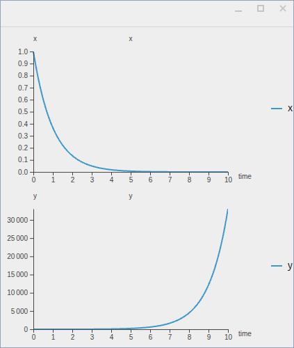
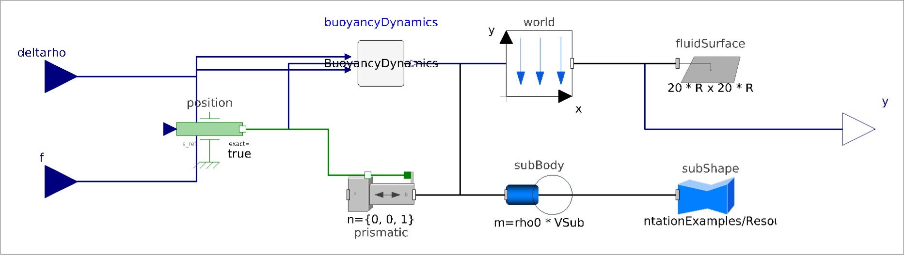
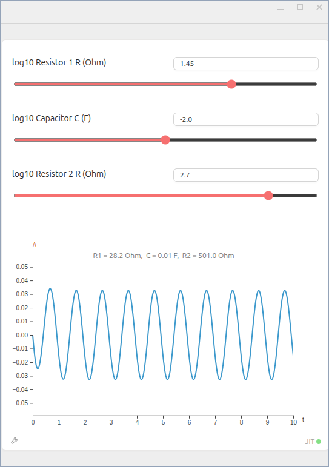
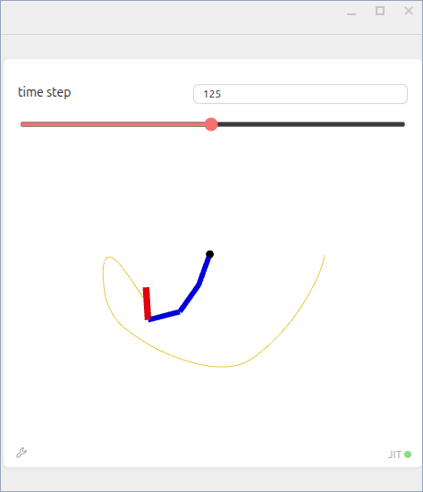
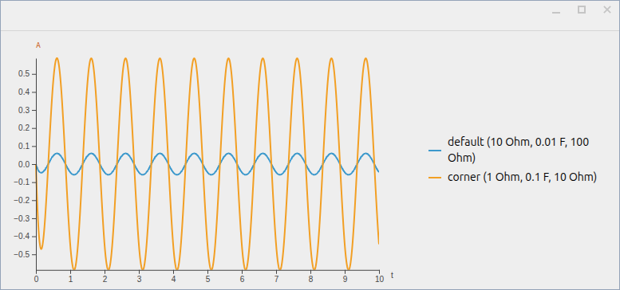
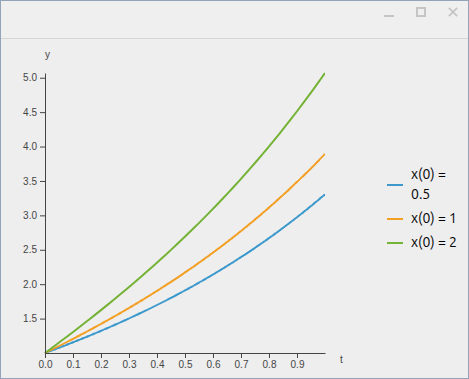
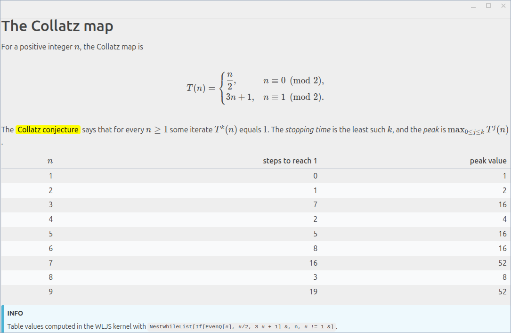
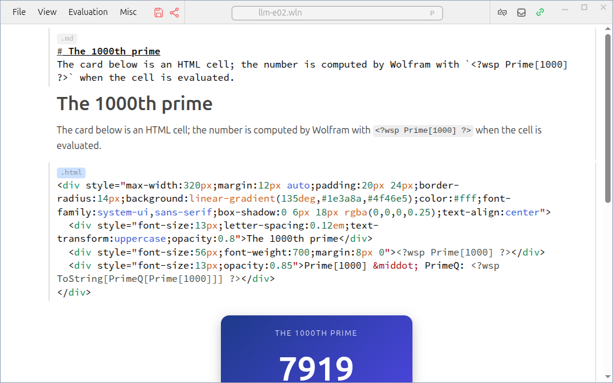
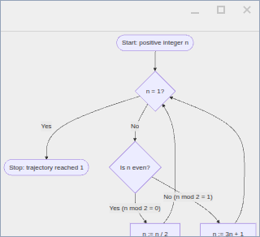

Seventy of Wolfram's agent skills, including the System Modeler AI toolkit, adapted to run in the open-source WLJS notebook, tested one by one, with fourteen defects found along the way.
Each picture comes from a skill's final test run, where a fresh agent used the skill and an independent reviewer re-checked the result, except the diagram, which comes from the W4 fix's own before/after test.






Six collections fetched at fixed commits and checksummed. Never edited.
Per skill: where it runs, what changes from Mathematica, what needs the user's OK.
Plus the catalogue and the results table, from the same source.
Loads the matching skill and follows ROUTES.md to the WLJS kernel.
Every result saved as a notebook the user can open and re-run.
Wolfram's own AgentTools test suites, run in the WLJS kernel and in a fresh kernel, plus the notebook converter's 174 tests.
A fresh agent runs each skill on Wolfram's own example material. Six checks: triggered, route, rules, notebook, correct, clean.
Reviewer agents re-read every verdict against its evidence and can overturn it. Failed attempts stay on record.
"Limited" and "not tested" each name their reason, usually a feature that needs Wolfram's servers, which this work kept off on purpose.
| ID | Where | What goes wrong | Status |
|---|---|---|---|
| W1 | Mathematica 15.0 example data | ExampleData/Submarine.mo does not build on its own (missing noEvent) | workaround |
| W2 | Mathematica 15.0 | ServiceFramework refuses even local services while internet is off | documented |
| W3 | Mathematica 15.0 | Loading the documentation-build package tries a paclet download | documented |
| W4 | System Modeler AI toolkit | Diagram lines end on guessed connector positions | patch |
| W5 | AgentTools debugging | FailedAssertions reports 0 failures after the first call | patch |
| J1 | WLJS 3.1.4 | Kernel-side save raises a false "File hash mismatch" dialog | local fix |
| J2 | WLJS 3.1.4 | Dialogs open on the primary monitor, away from their window | local fix |
| J3 | WLJS 3.1.4 | Kernel-side save drops graphics; plots show "Loading..." after restart | local fix |
| J4 | WLJS 3.1.4 | Notebooks made through the API get none of the extensions' listeners | local fix |
| I1 | MarkdownToNotebook example | build.wls leaves stray General::stop cells on built pages | patch |
| I2 | MarkdownToNotebook example | DocPageExamples paclet: three functional defects | patch |
| I3 | MarkdownToNotebook example | BlochSphereGates Demonstration: four factual errors | patch |
| I4 | MarkdownToNotebook | Converter drops a symbol page's Keywords | patch |
| I5 | wolfram-data-repository skill | Category list says 34 but lists 35 | patch |


